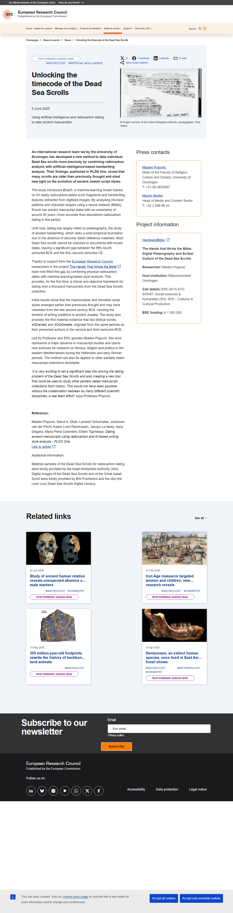
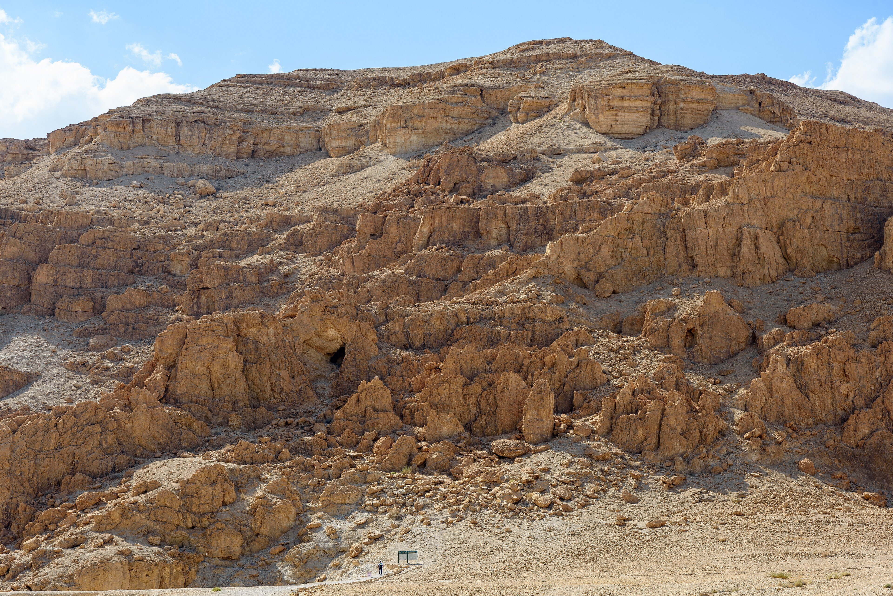

4 de julho de 2026
Você pediu o arquivo.
Aqui está a página que enterraram.
Antes do trecho, as três provas de que isso é real:



O que os anjos caídos ensinaram aos homens
1E Azazel ensinou os homens a fazerem espadas, e facas, e escudos, e couraças; e mostrou-lhes os metais da terra e a arte de trabalhá-los; e braceletes, e adornos; e o uso da pintura ao redor dos olhos, e o embelezamento das pálpebras, e as pedras mais preciosas, e toda a arte de colorir.
2E surgiu grande impiedade, e cometeram fornicação, e foram desviados, e corromperam-se em todos os seus caminhos.
3Semjaza ensinou os encantamentos e o corte de raízes. Armaros, a desfazer encantamentos. Baraquel, a observar as estrelas. Kokabel, as constelações. Ezequel, o conhecimento das nuvens...
4E à medida que os homens pereciam, clamaram, e o seu clamor subiu ao céu. E foi então que os quatro que vigiam olharam para a terra e viram o sangue derramado, e Aquele que é o Senhor dos séculos ordenou que
O que o Senhor dos séculos ordenou fazer com esses anjos está no capítulo 9.
Exatamente onde cortaram.
Este livro ficou enterrado por 1.600 anos. Faltam 107 capítulos.